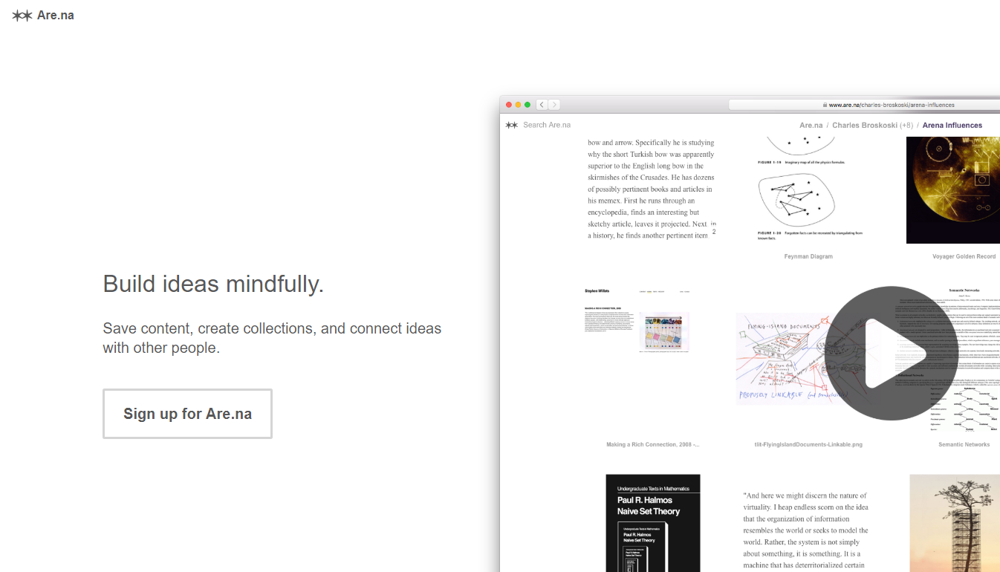
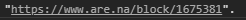
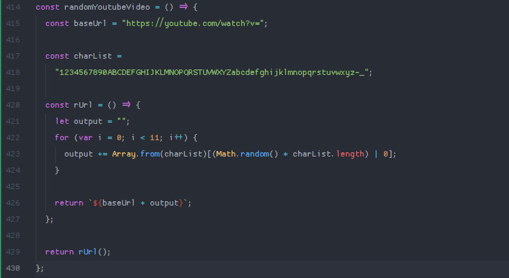
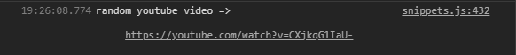

internet research techniques number one: random user generated content
one of the things that makes finding new and interesting information on the internet so much fun is the sheer immensity of the place. however, this is also one of the things that increases the probability that you won't find what you're looking for. a ton of websites that exist right now are dead, empty, broken, or otherwise abandoned. these websites are part of the internet wastelands. on the surface web, the wastelands are massive. outside of that, they're likely to be much, much larger. my point is, when you want to find something new, rather than going for a truly random result, your best bet is probably to use some sort of content aggregator.
number one: are.na.
are.na is one I picked mainly because the users are mainly comprised of people looking to find inspiration and expand their ideas. most of the content there is well-curated. are.na, in this way, is very far detached from the wastelands.
the are.na urls that we want look like this: https://are.na/block/xxxxxxx
where the x's are numbers. so, since I don't want to determine the type of content that I'll find, and I just want to find anything that
I haven't seen before, I'll write something like this:
rDigits(d) just basically writes a string with d amount of x's and then replaces them with random numbers from 0 to 9; then, randUrl is set equal to an arena block url with those d random numbers. so we'd get some output like this:
then, we just write a quick function that checks to see if the url actually goes anywhere and makes a new one if the first one doesn't work. it just repeats until it finds one that works, and then opens the block in a new tab. you can try this out at my randomarena utility! if you like finding new stuff online, then you'll probably like this.
the reason this works is because I'm using a proxy service to 'get around' cors policy. I'll probably remove this dependency in the future but right now I'm too stupid to understand how to do cross-origin requests correctly I'm busy!
number two: any other website that uses similar url schemes
finding random content is often just this simple. example: youtube. simply generate a string of eleven random characters and then append said characters to youtube's ubiquitous https://youtube.com/watch?v= url. this type of thing also works on imgur. any website that uses relatively consistent urls to point to user-generated content can be sifted through with this exact technique! generate url, check url, navigate to url/retry, rinse and repeat.
here's a quick example of how one might find a random youtube video (you'd still want to automate a validity check):
and the output looks like this:
I haven't though of a non-stupid way to do this yet. take a look at the stupid way that I came up with if you want to lose some brain cells free of
charge! I tried this method and was confused for about 30 seconds as to why I was getting rate-limited — I zoned out and accidentally let it run for about 1000 requests. guess I'll be manually validating the urls!
I really want to expand on the ideas I've had around collecting randomly selected user-generated data (like collecting things from various sources that fit a similar theme, allowing people to choose how many results they get back, wait am I just reinventing search engines, etc.), so I'll come back and make some more scripts around this concept later.
I kinda want to start documenting my research processes just so I can look back and laugh at myself later, and also so anyone reading this can find any helpful information that I might write about. I'll probably do these posts on a pretty
irregular basis, as well.
currently listening to Push Every Button by Mayhem and MEGATON BLAST by BlackY and Yooh remixed by t+pazolite